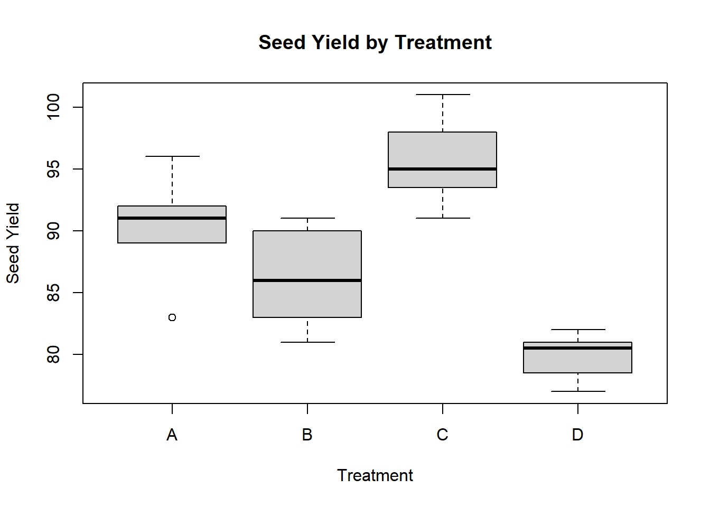

This is my completion of the nonparametric and counting statistics homework.
read.csv( "ntu_data.csv" )
Treatment NTU
1 Treatment A 8.69854023
2 Treatment A 13.71763734
3 Treatment A 2.37390550
4 Treatment A 2.32007059
5 Treatment A 10.39054998
6 Treatment A 4.53277895
7 Treatment A 16.18159177
8 Treatment A 20.89437565
9 Treatment A 17.86834351
10 Treatment A 17.09285432
11 Treatment A 21.47745274
12 Treatment A 20.41256974
13 Treatment A 21.86485147
14 Treatment A 18.27199084
15 Treatment A 17.11376270
16 Treatment A 20.26462922
17 Treatment A 21.15238159
18 Treatment A 21.84392221
19 Treatment A 21.35373015
20 Treatment A 21.72800093
21 Treatment A 25.40636108
22 Treatment A 26.52280984
23 Treatment A 26.44638634
24 Treatment A 27.81152415
25 Treatment A 28.06576646
26 Treatment A 28.08902233
27 Treatment A 25.95294042
28 Treatment A 29.42420855
29 Treatment A 23.36619369
30 Treatment A 27.56987981
31 Treatment A 25.61731735
32 Treatment A 27.07969493
33 Treatment A 28.37878448
34 Treatment A 24.92348921
35 Treatment A 27.05298005
36 Treatment A 28.44442574
37 Treatment A 26.13599360
38 Treatment A 129.18197994
39 Treatment A 160.92840468
40 Treatment A 108.01287436
41 Treatment A 172.64532819
42 Treatment A 34.39176707
43 Treatment A 101.25707120
44 Treatment A 30.26674195
45 Treatment A 148.68901943
46 Treatment A 107.89280465
47 Treatment B 10.44092869
48 Treatment B 1.29348348
49 Treatment B 5.17685619
50 Treatment B 11.74482009
51 Treatment B 1.26676605
52 Treatment B 6.18085158
53 Treatment B 0.05021250
54 Treatment B 9.77046019
55 Treatment B 9.97073272
56 Treatment B 6.16837859
57 Treatment B 0.03853549
58 Treatment B 6.11613567
59 Treatment B 9.07095669
60 Treatment B 9.60514276
61 Treatment B 1.81541358
62 Treatment B 4.87379926
63 Treatment B 6.19648078
64 Treatment B 4.94147724
65 Treatment B 14.24861836
66 Treatment B 8.77954717
67 Treatment B 7.82066423
68 Treatment B 1.79259137
69 Treatment B 6.85042866
70 Treatment B 1.54481515
71 Treatment B 5.61950413
72 Treatment B 12.67431099
73 Treatment B 3.90809388
74 Treatment B 2.40264404
75 Treatment B 10.44667881
76 Treatment B 11.85801034
77 Treatment B 19.11583110
78 Treatment B 18.95022578
79 Treatment B 17.30566266
80 Treatment B 21.22152473
81 Treatment B 21.30032822
82 Treatment B 19.58553861
83 Treatment B 20.53795115
84 Treatment B 19.53331072
85 Treatment B 17.38400756
86 Treatment B 18.49620773
87 Treatment B 20.39532136
88 Treatment B 20.66420175
89 Treatment B 17.71059929
90 Treatment B 19.38532094
91 Treatment B 18.74300558
92 Treatment B 19.30486730
93 Treatment B 18.32656854
94 Treatment B 19.51013396
95 Treatment B 21.46597680
96 Treatment B 16.59111416
97 Treatment B 16.20452141
98 Treatment B 19.50629076
99 Treatment B 17.96737893
100 Treatment B 16.49959361
101 Treatment B 16.75827458
102 Treatment B 19.08468089
103 Treatment B 20.74120127
104 Treatment B 17.62922719
105 Treatment B 21.28175162
106 Treatment B 17.25724760
107 Treatment B 16.63191179
108 Treatment B 19.05044152
109 Treatment B 24.57753897
110 Treatment B 24.81900642
111 Treatment B 23.57570534
112 Treatment B 27.32343934
113 Treatment B 23.33765622
114 Treatment B 26.65090655
115 Treatment B 25.92877277
116 Treatment B 29.95929503
117 Treatment B 24.40408157
118 Treatment B 27.72314346
119 Treatment B 29.19216869
120 Treatment B 25.24031328
121 Treatment B 29.32315937
122 Treatment B 29.05558019
123 Treatment B 25.06555013
124 Treatment B 26.17393656
125 Treatment B 26.70358669
126 Treatment B 38.76596107
127 Treatment B 56.57862667
128 Treatment B 100.26754625
Treatment Seeds
1 A 83
2 A 91
3 A 94
4 A 89
5 A 89
6 A 96
7 A 91
8 A 92
9 A 90
10 B 91
11 B 90
12 B 81
13 B 83
14 B 84
15 B 83
16 B 88
17 B 91
18 B 89
19 B 84
20 C 101
21 C 100
22 C 91
23 C 93
24 C 96
25 C 95
26 C 94
27 D 78
28 D 82
29 D 81
30 D 77
31 D 79
32 D 81
33 D 80
34 D 81
Question 1
The FDA has suggested a change in a medication that has been shown to have detrimental side effects in half of the patients. A clinical trial was conducted with nineteen patients; only three reported side effects. Did the change make a significant difference?
x <-3n <-19binom.test( x, n, p =0.5,alternative =c( "two.sided" ),conf.level =0.95)
Exact binomial test
data: x and n
number of successes = 3, number of trials = 19, p-value = 0.004425
alternative hypothesis: true probability of success is not equal to 0.5
95 percent confidence interval:
0.03382625 0.39578455
sample estimates:
probability of success
0.1578947
Here I used a binomial test because we know the expected success and we want to test proportions of success. The p value is statistically significant and we reject the null hypothesis. This verifies that the alteration in the medication had an effect on the outcome.
Question 2
Two different environmental remediation treatments are evaluated for the impacts on turbidity (measured using the Nephelometric Turbidity Unit or NTU). For regulatory reasons, turbidity is binned into four groups based on NTU: 0-15 ntu, 16-22 ntu, 23-30 ntu, and 31+ ntu. Do both treatments have the same impact on turbidity? Explain.
Here we used a chi-squared test because we are looking at two categorical treatment groups. We would reject the null hypothesis. There is strong evidence that the two treatments do not have the same impact on the distribution of the turbidity.
Question 3
A dozen graduate students tried to determine if there was a relationship between their undergraduate GPA and their scores on the Graduate Records Examination. Look at these data and determine the extent to which they are related. Explain.
Spearman's rank correlation rho
data: graddata$GPA and graddata$GRE
S = 118.83, p-value = 0.04593
alternative hypothesis: true rho is not equal to 0
sample estimates:
rho
0.5845215
Here a spearman’s rank correlation was conducted to determine the relationship between GRE and GPA scores. We use this test because it does not assume normality and conducts a ranked based analysis. Since the rho value is about 0.58, and the p-value is about 0.046, this indicates a positive relationship of about 5% and we reject the null. This would suggest that higher GPAs yield higher GRE scores.
Question 4
You are looking at fruit yield on dogwood. You designed an experiment with four different treatments and measured the total yield in germinated seeds. Are there differences in yield? Explain.
Kruskal-Wallis rank sum test
data: Seeds by Treatment
Kruskal-Wallis chi-squared = 25.629, df = 3, p-value = 1.141e-05
boxplot(Seeds ~ Treatment, data = fruitdata, main ="Seed Yield by Treatment",xlab ="Treatment", ylab ="Seed Yield")

Here a Kruskal-Wallis rank sum test was performed because you are comparing the means of groups. The chi-squared value indicates a 25.629 degree of difference with 3 degrees of freedom. The p-value is 1.141e-05 which means we reject the null and that there are significant differences between the seed yields across different treatments. The boxplot helps to visualize this.